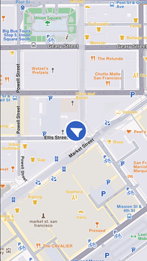
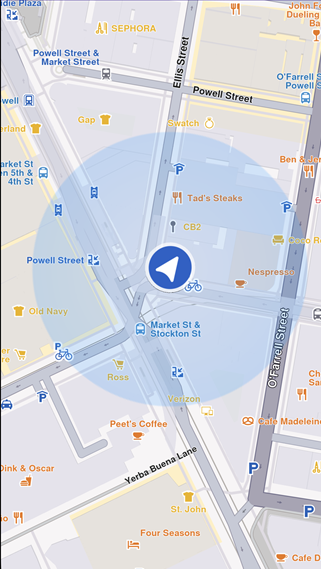
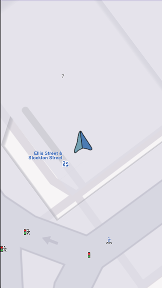

Show Location on Map¶
The device location is shown by default using an arrow position tracker. When setLiveDataSource is successfully set and permissions are granted, the position tracker appears on the map as an arrow.

Default position tracker showing current positionMultiple position trackers on the map are not currently supported.
📝 Note: GPS accuracy may be limited in environments such as indoor spaces, areas with weak GPS signals, or locations with significant obstructions like narrow streets or tall buildings. In these situations, the tracker may exhibit erratic movement within a confined area. Device sensor performance, such as accelerometer and gyroscope, can further impact GPS positioning accuracy.
This behavior is more pronounced when the device is stationary.
Follow Position¶
Call the startFollowingPosition method on the mapController to follow the position tracker:
mapController.startFollowingPosition();The startFollowingPosition method accepts parameters such as animation (controls camera movement to the tracker position), zoomLevel, and viewAngle.
💡 Tip: Setting
zoomLevelandviewAngleviastartFollowingPositionmay behave differently than configuring them throughsetZoomLevelandsetViewAngleonFollowPositionPreferences, especially in scenarios involving complex user interactions (for example, when user-modified values via touch need to be persisted). It is recommended to try both approaches and choose the one that best fits your specific use case.
Set map rotation mode¶
Rotate the map with the user orientation when following position:
final prefs = mapController.preferences.followPositionPreferences;
prefs.setMapRotationMode(FollowPositionMapRotationMode.positionHeading);FollowPositionMapRotationMode.compass:
prefs.setMapRotationMode(FollowPositionMapRotationMode.compass);FollowPositionMapRotationMode.fixed and providing a mapAngle value:
prefs.setMapRotationMode(FollowPositionMapRotationMode.fixed, mapAngle: 30);A value of 0 for the mapAngle parameter represents north-up alignment.
The mapRotationMode returns a record containing:
- The current
FollowPositionMapRotationModemode - The map angle set in case of
FollowPositionMapRotationMode.fixed
Exit follow position¶
Call the stopFollowingPosition method to programmatically stop following the position:
mapController.stopFollowingPosition();touchHandlerExitAllow to false (see the section below).
Customize Follow Position Aettings¶
The FollowPositionPreferences class customizes the behavior of following the position. Access this from the preferences getter of the mapController.
The fields defined in FollowPositionPreferences take effect only when the camera is in follow position mode. To customize camera behavior when not following the position, refer to the fields available in MapViewPreferences and GemMapController.
| Field | Type | Explanation |
|---|---|---|
| cameraFocus | Point | The position on the viewport where the position tracker is located on the screen. |
| timeBeforeTurnPresentation | int | The time interval before starting a turn presentation |
| touchHandlerExitAllow | bool | If set to false then gestures made by the user will exit follow position mode |
| touchHandlerModifyPersistent | bool | If set to true then changes made by the user using gestures are persistent |
| viewAngle | double | The viewAngle used within follow position mode |
| zoomLevel | int | The zoomLevel used within follow position mode |
| accuracyCircleVisibility | bool | Specifies if the accuracy circle should be visible (regardless if is in follow position mode or not) |
| isTrackObjectFollowingMapRotation | bool | Specifies if the track object should follow the map rotation |
Refer to the adjust map guide for more information about the viewAngle, zoomLevel, and cameraFocus fields.
If no zoom level is set, a default value is used.
Use touchHandlerModifyPersistent¶
When the camera enters follow position mode and manually adjusts the zoom level or view angle, these modifications are retained until the mode is exited.
If touchHandlerModifyPersistent is set to true, invoking startFollowingPosition (with default parameters for zoom and angle) restores the zoom level and view angle from the previous follow position session.
If touchHandlerModifyPersistent is set to false, calling startFollowingPosition (with default zoom and angle parameters) recalculates appropriate values for the zoom level and view angle.
💡 Tip: Set the
touchHandlerModifyPersistentproperty value right before calling thestartFollowingPositionmethod.
Use touchHandlerExitAllow¶
If the camera is in follow position mode and the touchHandlerExitAllow property is set to true, a two-finger pan gesture in a non-vertical direction exits follow position mode.
If touchHandlerExitAllow is set to false, the user cannot manually exit follow position mode through touch gestures. The mode can only be exited programmatically by calling the stopFollowingPosition method.
Set circle visibility¶
Show the accuracy circle on the map (hidden by default):
FollowPositionPreferences prefs = mapController.preferences.followPositionPreferences;
GemError error = prefs.setAccuracyCircleVisibility(true);
Accuracy circle turned onCustomize circle color¶
Set the accuracy circle color using the setDefPositionTrackerAccuracyCircleColor static method from the MapSceneObject class:
final GemError setErrorCode = MapSceneObject.setDefPositionTrackerAccuracyCircleColor(Colors.red);
print("Error code for setting the circle color: $setErrorCode");💡 Tip: Use colors with partial opacity instead of fully opaque colors for improved visibility and usability.
Retrieve the current color using the defPositionTrackerAccuracyCircleColor static getter:
final Color color = MapSceneObject.defPositionTrackerAccuracyCircleColor;resetDefPositionTrackerAccuracyCircleColor static method:
final GemError resetErrorCode = MapSceneObject.resetDefPositionTrackerAccuracyCircleColor();
print("Error code for resetting the circle color: $resetErrorCode");Set position of the position tracker on the viewport¶
Set the position tracker on a particular spot of the viewport while in follow position mode using the cameraFocus property:
// Calculate the position relative to the viewport
double twoThirdsX = 2 / 3;
double threeFifthsY = 3 / 5;
Point<double> position = Point(twoThirdsX, threeFifthsY);
// Set the position of the position tracker in the viewport
// while in follow position mode
FollowPositionPreferences prefs =
mapController.preferences.followPositionPreferences;
GemError error = prefs.setCameraFocus(position);
mapController.startFollowingPosition();setCameraFocus method uses a coordinate system relative to the viewport, not physical pixels. Point(0.0, 0.0) corresponds with the top-left corner and Point(1.0, 1.0) corresponds with the bottom-right corner.
Customize Position Icon¶
Customize the position tracker to suit your application's requirements. Set a simple PNG as the position tracker:
// Read the file and load the image as a binary resource
final imageByteData = (await rootBundle.load('assets/navArrow.png'));
// Convert the binary data to Uint8List
final imageUint8List = imageByteData.buffer.asUint8List();
// Customize the position tracker
MapSceneObject.customizeDefPositionTracker(imageUint8List, SceneObjectFileFormat.tex);glb files can be set. The format parameter of the customizeDefPositionTracker should be set to SceneObjectFileFormat.tex in this case.
Setting different icons for different maps is not currently supported.
⚠️ Attention: Ensure the resource (in this example
navArrow.png) is correctly registered within thepubspec.yamlfile. See the Flutter documentation for more information.

Custom position trackerOther Position Tracker Settings¶
Change settings such as scale and visibility of the position tracker using the methods available on the MapSceneObject, obtained using MapSceneObject.getDefPositionTracker.
Change the position tracker scale¶
Use the scale setter to change the position tracker scale:
// Get the position tracker
MapSceneObject mapSceneObject = MapSceneObject.getDefPositionTracker();
// Change the scale
mapSceneObject.scale = 0.5;(0, mapSceneObject.maxScale). The code snippet above sets half the scale.
📝 Note: The scale of the position tracker stays constant on the viewport regardless of the map zoom level.
Change the position tracker visibility¶
Use the visibility setter to change the position tracker visibility:
// Get the position tracker
MapSceneObject mapSceneObject = MapSceneObject.getDefPositionTracker();
// Change the visibility
mapSceneObject.visibility = false;